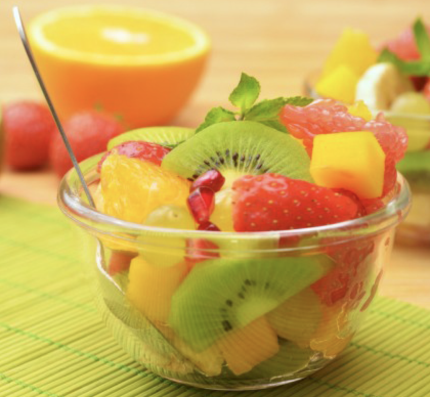
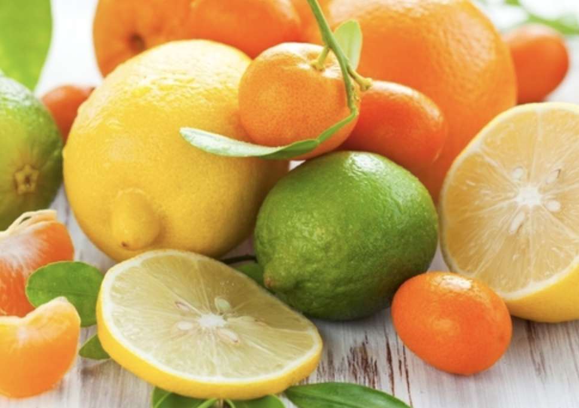
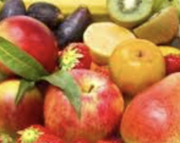
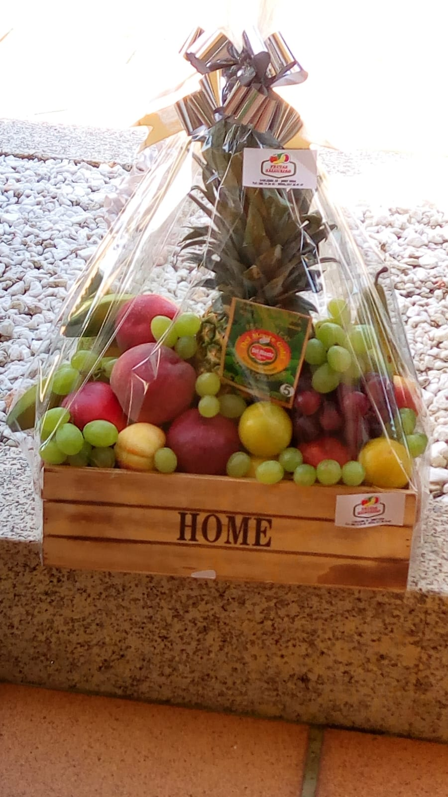
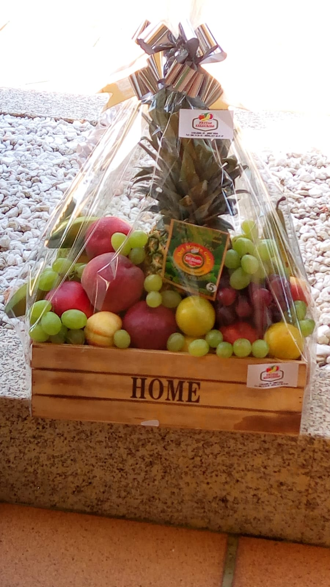
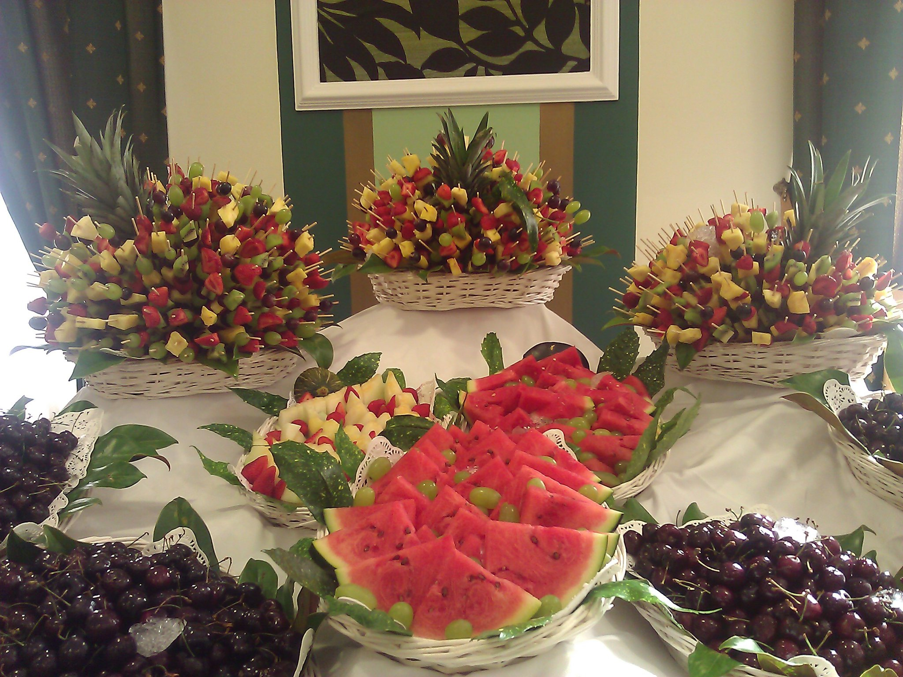
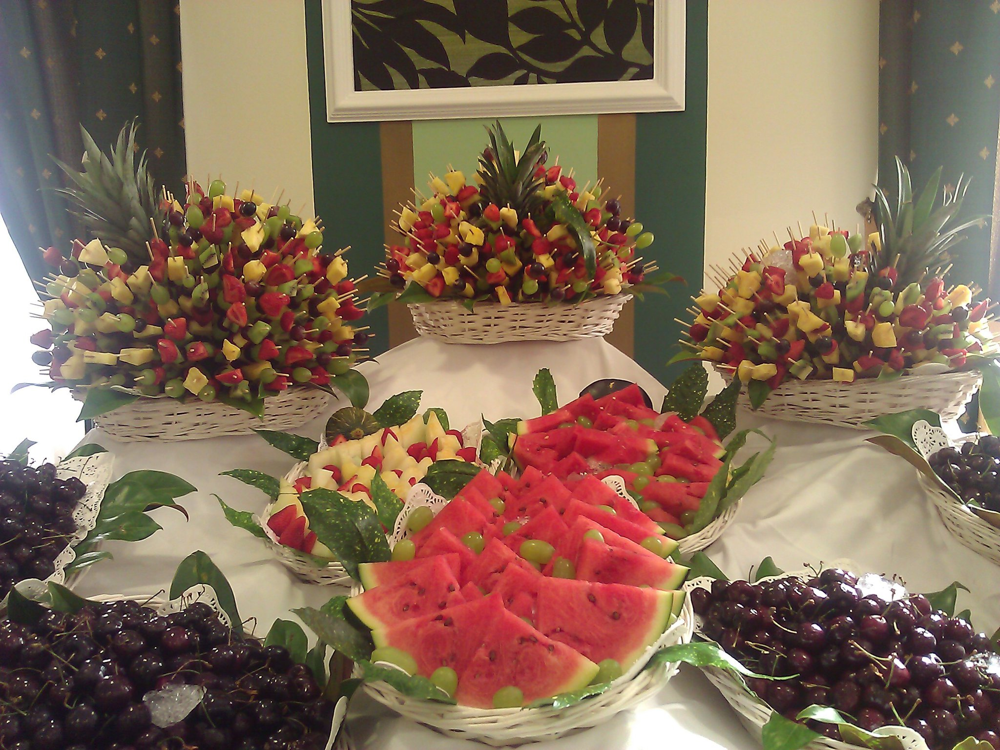

Consejos

Como dice el refrán: "Mejor solas que mal acompañadas"
Consumir las frutas fuera de las comidas, a media mañana o a media tarde es lo ideal, o solas como desayuno (prestar atención en no mezclar dulces y ácidas)

Consumir las frutas ácidas o semi-ácidas siempre por la mañana
Piña, ciruela, mora, frambuesa, grosella, naranja, lima, limón, membrillo, fresas, níspero, mandarina, tomate, uva, manzana verde, guayaba, pera, uva pasa, etc.

Consumir las frutas dulces por la mañana o por la tarde
Melón, plátano, sandía, manzana golden, ciruelas, uvas, albaricoque, chirimoya, caqui, grosella, granada, ciruela claudia, pera conferencia, etc.

 

 
